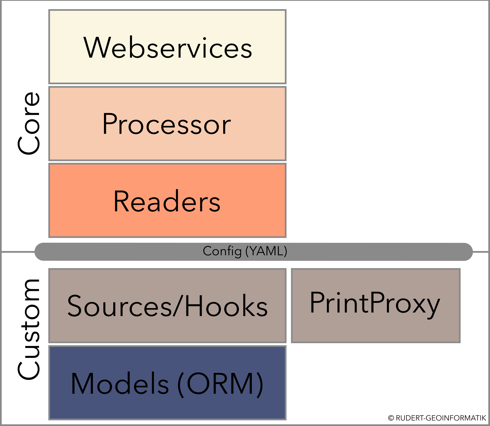
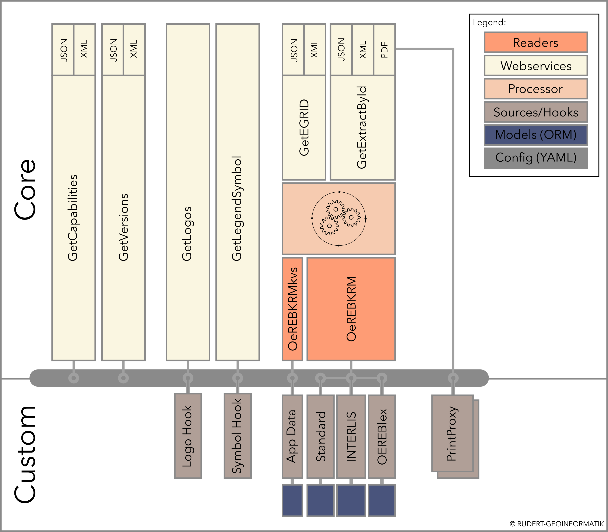

pyramid_oereb (ÖREB-Server) documentation¶
pyramid_oereb is an open-source implementation of the server side
part for the swiss “Cadastre of Public-law Restrictions on
landownership”
(PLR-cadastre).
It is written in Python and designed as a plugin for the Pyramid Web
Framework.
This allows pyramid_oereb to be included in any Pyramid web
application.
If you are planning to run an own instance of pyramid_oereb, we suggest to read the sections
Installation and Configuration to get started.
Architecture¶
The application is separated into different layers to provide different points to hook into it for easier customization.

The server provides access to the 4 services:
GetExtractById
GetEGRID
GetCapabilities
GetVersions
The server is able to use ÖEREBlex, GeoAdmin API for gathering data. This needs to be configured and prepared by the integrator of this package. In addition a small tool for loading legend symbols for each used WMS layer is included.
For the moment we provide an adapter to get the PDF static extract from mapfishprint.
As mentioned above we used a layer architecture for this project. See following graphic:
